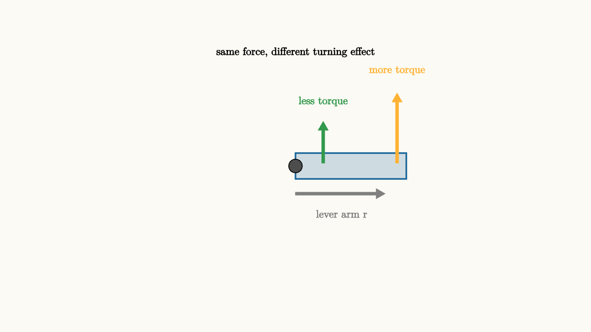

Rotation Turns Force Into Torque
Open a heavy door from the handle and it swings easily. Push near the hinge with the same force and it barely moves. The force did not lose strength. Its location changed the effect.
That observation is the doorway into rotational mechanics. For translation, the central question is how the net force changes the motion of the center of mass. For rotation, the central question is how a force changes the turning motion around an axis.
The new quantity is torque:
Here $\vec r$ points from the rotation axis to the point where the force is applied. The magnitude is
where $\theta$ is the angle between the lever arm and the force. This formula says three useful things at once. A larger force gives a larger torque. A longer lever arm gives a larger torque. A force aimed straight through the pivot gives zero torque because $\sin 0=0$.

source
background = [0.985, 0.98, 0.955, 1]
camera = Camera(4.8b)
mesh diagram = block {
. fill{alpha{0.2} BLUE} stroke{BLUE, 2} center{[0.9, 0, 0]} Rect([1.8, 0.42])
. fill{DARK_GRAY} center{[0, 0, 0]} Circle(0.11)
. color{GRAY} Arrow(start: [0, -0.45, 0], end: [1.45, -0.45, 0])
. color{ORANGE} Arrow(start: [1.65, 0.05, 0], end: [1.65, 1.18, 0])
. color{GREEN} Arrow(start: [0.45, 0.05, 0], end: [0.45, 0.72, 0])
. center{[0.75, -0.78, 0]} color{GRAY} Text("lever arm r", 0.62)
. center{[1.65, 1.55, 0]} color{ORANGE} Text("more torque", 0.62)
. center{[0.45, 1.05, 0]} color{GREEN} Text("less torque", 0.62)
. center{[0, 1.85, 0]} Text("same force, different turning effect", 0.62)
}
"door as lever"
play Fade(0.6)The pivot matters. In a free-body diagram for translation, forces are often slid around the drawing because only their vector sum matters. In rotation, the line of action matters. Two equal forces can produce very different rotation if they act at different distances from the axis.
Angles are positions too
To describe rotation, we replace position with angle. The angular position is usually $\theta(t)$. Angular velocity is
and angular acceleration is
Radians make these formulas clean. An angle of one radian means the arc length equals the radius. If a point on a wheel is distance $r$ from the center, its arc length is
Different points on the same wheel share the same angular velocity, but the outer rim moves faster in ordinary linear speed:
This is why the edge of a record travels farther than a point near the label during the same spin.
Moment of inertia is rotational mass
Newton's second law has a rotational version:
The new symbol $I$ is moment of inertia. It plays the role that mass played in straight-line motion. A large moment of inertia means the object resists changes in angular velocity.
Moment of inertia depends on where the mass is. A compact disk and a hoop can have the same mass and radius, yet the hoop is harder to spin up because more of its mass sits far from the axis. For a point mass,
That square on $r$ is the reason distance from the axis matters so strongly. Move mass twice as far out and its contribution to rotational inertia grows by a factor of four.
source
param lever = 1.25
background = [0.985, 0.98, 0.955, 1]
camera = Camera(4.8b)
let Door = |angle, lever| rotate{angle} block {
. fill{alpha{0.2} BLUE} stroke{BLUE, 2} center{[0.8, 0, 0]} Rect([1.6, 0.4])
. fill{DARK_GRAY} center{[0, 0, 0]} Circle(0.1)
. fill{ORANGE} center{[lever, 0.0, 0]} Circle(0.08)
. color{ORANGE} Arrow(start: [lever, 0.18, 0], end: [lever, 1.0, 0])
}
"mark the lever"
mesh title = center{[0, 1.7, 0]} Text("torque grows with lever arm", 0.66)
mesh door = Door(angle: 0.0, lever: $lever)
mesh note = center{[0, -1.35, 0]} color{DARK_GRAY} Text("tau = r F sin(theta)", 0.72)
play Write(0.8)
"move the handle outward"
lever = 1.6
door = Door(angle: 0.0, lever: $lever)
play Lerp(1.0)
"let the torque turn the door"
door = Door(angle: 0.55, lever: $lever)
play Lerp(1.2)
"replace the door with the law"
door = block {
. fill{alpha{0.2} ORANGE} stroke{ORANGE, 2} center{[-0.8, 0, 0]} Rect([0.55, 1.25])
. fill{alpha{0.2} BLUE} stroke{BLUE, 2} center{[0.15, 0, 0]} Rect([0.55, 0.72])
. center{[-0.8, 0.9, 0]} color{ORANGE} Text("tau", 0.72)
. center{[0.15, 0.55, 0]} color{BLUE} Text("I", 0.72)
. center{[1.05, 0.05, 0]} Text("alpha", 0.72)
}
note = center{[0, -1.35, 0]} color{DARK_GRAY} Text("net torque = I alpha", 0.74)
play Trans(1.0)The slideshow shows the same force applied farther from the pivot, then lets that torque rotate the door. The final picture compresses the scene into the law. Torque produces angular acceleration in proportion to rotational inertia.
Work and energy also rotate
Rotation has its own energy bookkeeping. If a torque turns an object through an angle, the work is
For constant torque, this becomes $W=\tau\Delta\theta$. Rotational kinetic energy is
This mirrors the straight-line formula $\frac12 mv^2$. The parallel is useful, but it should be read with care. The mass distribution decides $I$, and angular velocity belongs to the whole rigid body.
Rolling motion combines the two accounts. A rolling wheel translates because its center of mass moves forward. It also rotates because the wheel spins. Its total kinetic energy is
That is why two objects can race down the same ramp and arrive at different times. Some shapes put more energy into rotation and less into center-of-mass speed.
Balance means torque balance
A seesaw can have zero net force and still rotate if torques fail to balance. A small child far from the pivot can balance an adult closer to the pivot because torque multiplies force by lever arm.
For static equilibrium, both conditions matter:
and
The first condition prevents translational acceleration. The second prevents angular acceleration. Bridges, ladders, wrenches, doors, and human joints all demand both.
The lesson to keep
Rotation begins when location joins force. A push has a turning effect only through its lever arm and direction. Torque measures that effect. Moment of inertia measures how strongly the mass distribution resists a change in spin.
When a problem rotates, choose an axis, measure lever arms from that axis, add torques with signs, and use $\tau_{\text{net}}=I\alpha$. The same physical interaction may still push the center of mass, so translation and rotation often run side by side. Torque is the part of the force story that remembers where the force was applied.